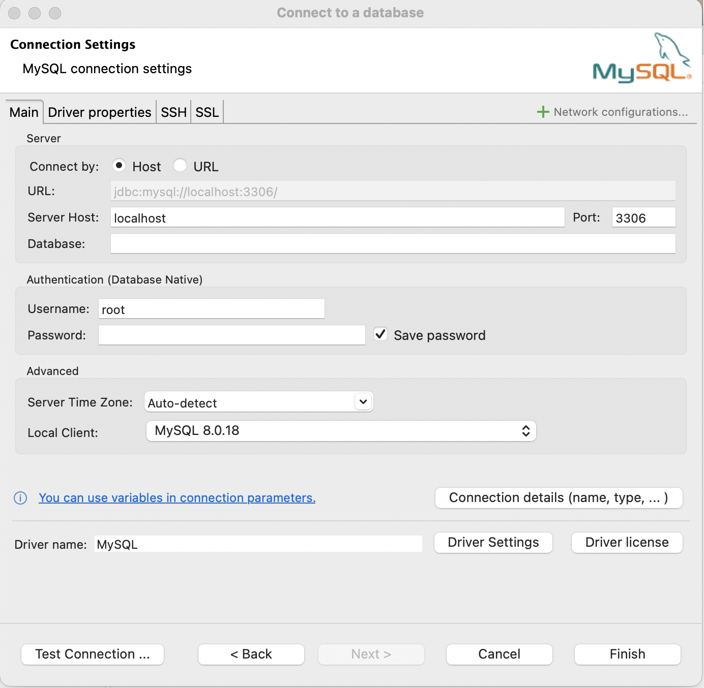
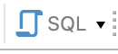

library(DBI)
library(RMariaDB)
library(dbplyr)
con_air <- DBI::dbConnect(
RMariaDB::MariaDB(),
dbname = "airlines",
host = Sys.getenv("MDSR_HOST"),
user = Sys.getenv("MDSR_USER"),
password = Sys.getenv("MDSR_PWD")
)2 SQL in R and DBeaver
There are three ways to engage with SQL using R. We will discuss each of them in this chapter, and we will expand on the third method in what follows (using interfaces like DBeaver, and RStudio, to run actual SQL code directly).
- Using the package dbplyr R will directly translate dplyr code into SQL.
- Using the DBI package, we can send SQL queries through an
rchunk. - Using a
sqlchunk, we can write actual SQL code inside a quarto document.
2.1 Translating dplyr code into SQL
Let’s go back to the airlines database to try out some things that we already know how to do in R. Recall that we need the DBI and RMariaDB packages to connect to R; we need the dbplyr package to translate SQL code into R.
The function dbListTables() in the DBI package will tell us what tables exist in the airlines database.
DBI::dbListTables(con_air)[1] "airports" "carriers" "flights" "planes" flights <- tbl(con_air, "flights")
carriers <- tbl(con_air, "carriers")Let’s ask a few questions about the data set using data wrangling techniques that should already be familiar.
- Over what years is the
flightsdata taken?
To start, let’s write the commands using tidy dplyr code.
# Source: SQL [1 x 2]
# Database: mysql [mdsr_public@mdsr.cdc7tgkkqd0n.us-east-1.rds.amazonaws.com:NA/airlines]
min_year max_year
<int> <int>
1 2010 2017Because flights is not actually a data.frame in R (but instead a tbl in SQL), the work that was done above was actually performed in SQL. To see the SQL code, we can use the function show_query.
show_query(yrs)<SQL>
SELECT MIN(`year`) AS `min_year`, MAX(`year`) AS `max_year`
FROM `flights`Note the similarity between the R code and the SQL code. We can see SELECT and MIN and MAX which are familiar. The AS function is new, but maybe it that AS does the job of assigning a new name to the output columns. FROM is also new and does the job of piping in a data set to use.
- Create a data set containing only flights between
LAXandBOSin 2012.
la_bos <- flights |>
filter(year == 2012 & ((origin == "LAX" & dest == "BOS") |
(origin == "BOS" & dest == "LAX")))
la_bos# Source: SQL [?? x 21]
# Database: mysql [mdsr_public@mdsr.cdc7tgkkqd0n.us-east-1.rds.amazonaws.com:NA/airlines]
year month day dep_time sched_dep_time dep_delay arr_time sched_arr_time
<int> <int> <int> <int> <int> <int> <int> <int>
1 2012 10 1 710 710 0 1538 1540
2 2012 10 1 818 820 -2 1644 1645
3 2012 10 1 855 844 11 1742 1712
4 2012 10 1 1219 1210 9 2043 2038
5 2012 10 1 1302 1300 2 2133 2125
6 2012 10 1 1436 1445 -9 2331 2309
# ℹ more rows
# ℹ 13 more variables: arr_delay <int>, carrier <chr>, tailnum <chr>,
# flight <int>, origin <chr>, dest <chr>, air_time <int>, distance <int>,
# cancelled <int>, diverted <int>, hour <int>, minute <int>, time_hour <dttm>show_query(la_bos)<SQL>
SELECT *
FROM `flights`
WHERE (`year` = 2012.0 AND ((`origin` = 'LAX' AND `dest` = 'BOS') OR (`origin` = 'BOS' AND `dest` = 'LAX')))The WHERE function in SQL acts as filter() did in R; & has been translated to AND, and | has been translated to OR.
As might be expected, dbplyr doesn’t translate every R command into SQL. After all, SQL is not a statistical software and doesn’t, for example, have a mechanism for creating data visualizations. To track which R commands are connected to SQL see the dbplyr reference sheet.
Because the data set has been subsetted substantially, we could pull it into R to create an R object. Note that now R is aware of the size of the entire data frame (7064 rows and 21 columns). The la_bos object now exists in the R environment and can be explored through the IDE.
la_bos <- la_bos |>
collect()
la_bos# A tibble: 7,064 × 21
year month day dep_time sched_dep_time dep_delay arr_time sched_arr_time
<int> <int> <int> <int> <int> <int> <int> <int>
1 2012 10 1 710 710 0 1538 1540
2 2012 10 1 818 820 -2 1644 1645
3 2012 10 1 855 844 11 1742 1712
4 2012 10 1 1219 1210 9 2043 2038
5 2012 10 1 1302 1300 2 2133 2125
6 2012 10 1 1436 1445 -9 2331 2309
# ℹ 7,058 more rows
# ℹ 13 more variables: arr_delay <int>, carrier <chr>, tailnum <chr>,
# flight <int>, origin <chr>, dest <chr>, air_time <int>, distance <int>,
# cancelled <int>, diverted <int>, hour <int>, minute <int>, time_hour <dttm>Chapter 3 will explore more SQL queries and using SQL verbs. For now, let’s continue learning about the different ways R can talk to SQL.
Always a good idea to terminate the SQL connection when you are done with it.
dbDisconnect(con_air)2.2 SQL queries through the DBI package
Using R as a wrapper, we can send actual SQL code to query data from the connection. It is okay if you aren’t yet able to write SQL commands from scratch, but try to figure out what the command is asking for. As mentioned above, we will start from scratch to learn SQL commands in Chapter 3.
Start by setting up the SQL connection in the same way.
con_air <- DBI::dbConnect(
RMariaDB::MariaDB(),
dbname = "airlines",
host = Sys.getenv("MDSR_HOST"),
user = Sys.getenv("MDSR_USER"),
password = Sys.getenv("MDSR_PWD")
)- Look at the first few rows of the
flightsdata.
Because the flights data is not an R object, we can’t open it in R to explore the variables. If we want to see a small bit of the data, we can SELECT everything (i.e, *) from the flights table but LIMIT the query to only the first eight observations.
Note that the code in the dbGetQuery() R function is written in SQL not in R.
A semicolon (;) is typically used to indicate the termination of a SQL statement. They are not always required (particularly when only one statement is being sent), however, it is good practice to use a semicolon at the end of each SQL statement. (Indeed, some SQL dialects require the semicolon at the end of every statement, regardless of whether or not there are more statements following.)
DBI::dbGetQuery(con_air,
"SELECT * FROM flights LIMIT 8;") year month day dep_time sched_dep_time dep_delay arr_time sched_arr_time
1 2010 10 1 1 2100 181 159 2320
2 2010 10 1 1 1920 281 230 2214
3 2010 10 1 3 2355 8 339 334
4 2010 10 1 5 2200 125 41 2249
5 2010 10 1 7 2245 82 104 2347
6 2010 10 1 7 10 -3 451 500
7 2010 10 1 7 2150 137 139 2337
8 2010 10 1 8 15 -7 538 537
arr_delay carrier tailnum flight origin dest air_time distance cancelled
1 159 XE N11137 2558 EWR OMA 162 1133 0
2 256 B6 N659JB 562 FLL SWF 131 1119 0
3 5 B6 N563JB 701 JFK SJU 196 1597 0
4 112 XE N16559 5982 IAD BNA 82 542 0
5 77 OO N908SW 6433 LAX FAT 37 209 0
6 -9 AA N3FRAA 700 LAX DFW 150 1235 0
7 122 DL N347NW 1752 ATL IAD 70 533 0
8 1 CO N73283 1740 SMF IAH 193 1609 0
diverted hour minute time_hour
1 0 21 0 2010-10-01 21:00:00
2 0 19 20 2010-10-01 19:20:00
3 0 23 55 2010-10-01 23:55:00
4 0 22 0 2010-10-01 22:00:00
5 0 22 45 2010-10-01 22:45:00
6 0 0 10 2010-10-01 00:10:00
7 0 21 50 2010-10-01 21:50:00
8 0 0 15 2010-10-01 00:15:00- How many flights per year are in the
flightstable?
dbGetQuery(con_air,
"SELECT year, count(*) AS num_flights FROM flights GROUP BY year ORDER BY num_flights;") year num_flights
1 2016 5617658
2 2017 5674621
3 2015 5819079
4 2014 5819811
5 2011 6085281
6 2012 6096762
7 2013 6369482
8 2010 6450117Note that we’ve now SELECTed two variables: year and num_flights (which we created along the way using count(*) which is written as n() in R) FROM the flights table. Then we GROUP BY the year variable which retroactively acts on the count(*) function. And last, we ORDER BY (which is similar to arrange()) the new num_flights variable.
Always a good idea to terminate the SQL connection when you are done with it.
dbDisconnect(con_air)
2.3 Direct SQL queries through a sql chunk
Notice that the formatting of the next few chunks is slightly different. Instead of reporting only the inside / code of the chunk, the entire chunk is printed. The SQL chunks are given by {sql} instead of {r} and each SQL chunk is required to connect to a particular database (through the con_air connection).
The same queries have been run.
Start by setting up the SQL connection in the same way.
```{r}
con_air <- DBI::dbConnect(
RMariaDB::MariaDB(),
dbname = "airlines",
host = Sys.getenv("MDSR_HOST"),
user = Sys.getenv("MDSR_USER"),
password = Sys.getenv("MDSR_PWD")
)
``````{sql}
#| connection: con_air
SELECT * FROM flights LIMIT 8;
```| year | month | day | dep_time | sched_dep_time | dep_delay | arr_time | sched_arr_time | arr_delay | carrier | tailnum | flight | origin | dest | air_time | distance | cancelled | diverted | hour | minute | time_hour |
|---|---|---|---|---|---|---|---|---|---|---|---|---|---|---|---|---|---|---|---|---|
| 2010 | 10 | 1 | 1 | 2100 | 181 | 159 | 2320 | 159 | XE | N11137 | 2558 | EWR | OMA | 162 | 1133 | 0 | 0 | 21 | 0 | 2010-10-01 21:00:00 |
| 2010 | 10 | 1 | 1 | 1920 | 281 | 230 | 2214 | 256 | B6 | N659JB | 562 | FLL | SWF | 131 | 1119 | 0 | 0 | 19 | 20 | 2010-10-01 19:20:00 |
| 2010 | 10 | 1 | 3 | 2355 | 8 | 339 | 334 | 5 | B6 | N563JB | 701 | JFK | SJU | 196 | 1597 | 0 | 0 | 23 | 55 | 2010-10-01 23:55:00 |
| 2010 | 10 | 1 | 5 | 2200 | 125 | 41 | 2249 | 112 | XE | N16559 | 5982 | IAD | BNA | 82 | 542 | 0 | 0 | 22 | 0 | 2010-10-01 22:00:00 |
| 2010 | 10 | 1 | 7 | 2245 | 82 | 104 | 2347 | 77 | OO | N908SW | 6433 | LAX | FAT | 37 | 209 | 0 | 0 | 22 | 45 | 2010-10-01 22:45:00 |
| 2010 | 10 | 1 | 7 | 10 | -3 | 451 | 500 | -9 | AA | N3FRAA | 700 | LAX | DFW | 150 | 1235 | 0 | 0 | 0 | 10 | 2010-10-01 00:10:00 |
| 2010 | 10 | 1 | 7 | 2150 | 137 | 139 | 2337 | 122 | DL | N347NW | 1752 | ATL | IAD | 70 | 533 | 0 | 0 | 21 | 50 | 2010-10-01 21:50:00 |
| 2010 | 10 | 1 | 8 | 15 | -7 | 538 | 537 | 1 | CO | N73283 | 1740 | SMF | IAH | 193 | 1609 | 0 | 0 | 0 | 15 | 2010-10-01 00:15:00 |
```{sql}
#| connection: con_air
SELECT year, count(*) AS num_flights FROM flights GROUP BY year ORDER BY num_flights;
```| year | num_flights |
|---|---|
| 2016 | 5617658 |
| 2017 | 5674621 |
| 2015 | 5819079 |
| 2014 | 5819811 |
| 2011 | 6085281 |
| 2012 | 6096762 |
| 2013 | 6369482 |
| 2010 | 6450117 |
Always a good idea to terminate the SQL connection when you are done with it.
dbDisconnect(con_air)2.4 DBeaver
DBeaver is a free SQL client that supports MySQL (as well as other dialects like MariaDB, PostgreSQL, and SQLite). While writing SQL code in R has some benefits (e.g., piping results tables into ggplot2 for visualizations), using a SQL client that is designed for SQL queries has benefits as well. In order to use DBeaver, download the client onto your computer and open it from your Applications.
2.4.1 New database connection
Using the pull-down menus, navigate to a new database connection (Database -> New Database Connection). Click on the MySQL icon (and click next). You should see an image similar to Figure 2.1.

- Keep the
Hostradio button toggled (don’t click onURL) - Where currently it says
Server Host: localhostchangelocalhostto the URL for the MySQL server to which you want to connect. - Change the
Usernameto the appropriate username for the server. - Change the
Passwordto the appropriate password for the server. - Optional: in the
Database:box, include the database you will query. - Click
Finish.
Once the connection is established, you should be able to navigate through the databases and their tables on the left side of the DBeaver window.
2.4.2 Writing SQL queries
Pull up a SQL script by clicking ont he SQL button as seen in Figure 2.2.

Write SQL code. Click on the orange triangle to run the code.
Each lab should be saved as a .sql files that can be turned in. The SQL queries (in the .sql file) should be able to be run by someone else. Use the hashtag (#) to comment out lines so that you can identify particular problems or comment on the query results.
If you did not specify which database to use when you set up the connection, the database can be specified at the top of the .sql file as USE database; (for example, you might want USE airlines;, with the semi-colon, before running your lines of SQL code).
To write text use /* write text here ... */, the slash and asterisk, for any commenting in the .sql file.
2.5 Reflection questions
What are the three main ways to write a SQL query using the RStudio interface?
How is DBeaver similar and/or different from writing queries using **R*?
Why can’t you use
collect()to pull theflightsdata into your R session?
2.6 Ethics considerations
How / why is
Sys.getenv()used to protect the username and password for the SQL connection?If SQL databases are expensive to maintain, who will then have access to important data? Does it matter?